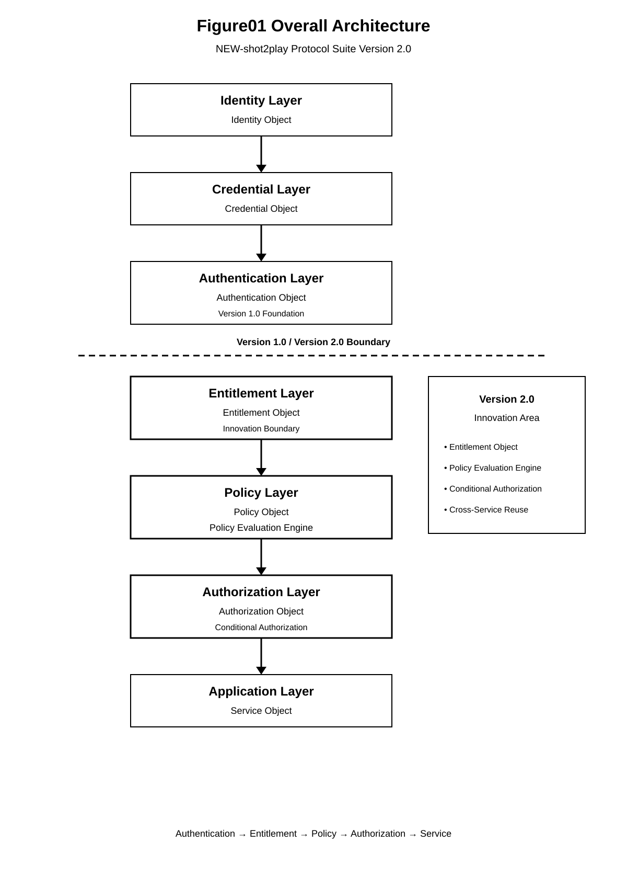

Chapter 02 — Protocol Architecture
This chapter defines the protocol architecture of the NEW-shot2play Protocol Suite Version 2.0.
The architecture establishes the logical relationships between identity, credentials, authentication, entitlement, policy evaluation, authorization, and service execution.
An implementation conforming to Version 2.0 MUST preserve the logical separation and dependency relationships defined in this chapter, even where multiple protocol functions are implemented within the same software component.
2.1 Architectural Scope
The Version 2.0 protocol architecture defines a layered processing model in which an authenticated identity becomes an input to subsequent entitlement and authorization processing.
The architecture is applicable to both centralized and distributed implementations.
A centralized implementation MAY execute multiple protocol layers within a single trusted component.
A distributed implementation MAY assign different protocol layers to different services, processes, hosts, or administrative domains.
In either case, the semantic relationships between protocol objects and authorization decisions SHALL remain unchanged.
2.2 Layered Protocol Architecture
Version 2.0 defines seven logical protocol layers:
| Layer | Primary Function | Primary Output |
|---|---|---|
| Identity Layer | Represents the subject identity. | Identity Object |
| Credential Layer | Represents authentication credentials and trust information. | Credential Object |
| Authentication Layer | Establishes authenticated identity. | Authentication Object |
| Entitlement Layer | Establishes and maintains rights and usage qualifications. | Entitlement Object |
| Policy Layer | Defines conditions applicable to authorization. | Policy Object |
| Authorization Layer | Evaluates authorization inputs and produces a decision. | Authorization Object |
| Application Layer | Enforces the authorization result at the protected service. | Service Execution |
The logical architecture is illustrated by Figure 01.

2.3 Architectural Processing Direction
The normal processing direction proceeds from identity establishment toward service execution.
Identity ↓ Credential ↓ Authentication ↓ Entitlement ↓ Policy Evaluation ↓ Authorization ↓ Service
Each downstream layer MAY consume state produced by an upstream layer, but SHALL NOT assume that successful processing by an upstream layer automatically establishes the validity of all downstream conditions.
For example, successful authentication SHALL establish an authenticated identity but SHALL NOT establish that an applicable Entitlement exists.
Similarly, the existence of an Entitlement SHALL NOT by itself establish that a requested action is authorized.
2.4 Authentication Boundary
The Authentication Layer defines the boundary between identity establishment and subsequent authorization processing.
The Authentication Layer SHALL determine whether the subject has successfully completed the applicable authentication procedure.
The resulting Authentication Object MAY contain:
- Subject Identifier
- Authentication Method
- Authentication Result
- Authentication Time
- Authentication Transaction Identifier
- Authentication Assurance Information
The authentication result SHALL be treated as an input to authorization processing rather than as an authorization decision.
2.5 Entitlement Boundary
The Entitlement Layer introduces an independently managed protocol object representing a right, capability, eligibility, or usage qualification.
An Entitlement MAY be established by:
- a successful transaction;
- a verified event;
- a purchase;
- a visit;
- an attendance event;
- an administrative operation; or
- another service-defined entitlement event.
The Entitlement Object SHALL remain logically distinguishable from the Authentication Object.
The Entitlement Layer SHALL maintain the authoritative state required to determine whether the entitlement is currently effective.
Figure 15 defines the lifecycle of an Entitlement.

2.6 Policy Boundary
The Policy Layer defines the conditions under which a requested operation MAY be authorized.
A Policy MAY evaluate conditions relating to:
- subject identity;
- requested action;
- resource;
- service;
- entitlement state;
- time;
- location;
- device;
- transaction state;
- risk; and
- other contextual information defined by the service.
Policy evaluation SHALL be logically distinguishable from authentication and entitlement acquisition.
2.7 Authorization Boundary
The Authorization Layer combines the authorization inputs required to determine whether a requested operation may proceed.
At minimum, applicable authorization processing SHALL consider:
- authenticated identity;
- authorization request;
- applicable entitlement;
- applicable policy; and
- authorization context.
The resulting Authorization Decision SHALL indicate whether the requested operation is permitted.
An Allow result SHALL require that all required authorization conditions have been established as valid.
If a required authorization condition cannot be established, the implementation SHALL NOT convert the condition into an Allow result.
2.8 Service Enforcement Boundary
The Application Layer contains the protected service boundary at which an Authorization Decision is enforced.
A protected service operation MUST NOT be executed solely because the requester is authenticated.
The service SHALL verify the applicability of the Authorization Decision to the requested operation before performing the protected operation.
The decision SHALL remain bound to the applicable authorization request, subject, and authorization state.
2.9 Layer Independence
The logical independence of the protocol layers is a normative architectural property.
A conforming implementation MAY combine two or more logical layers inside a single process or service.
Such implementation-level combination SHALL NOT eliminate the semantic distinction between:
- authentication state;
- entitlement state;
- policy state;
- authorization state; and
- service execution state.
This separation permits an authorization decision to depend on state that was established independently from the current authentication operation.
2.10 Protocol Object Interaction
The protocol layers operate on distinct logical objects. The principal objects relevant to the architecture are:
| Object | Layer | Architectural Role |
|---|---|---|
| Identity Object | Identity Layer | Represents the subject identity. |
| Credential Object | Credential Layer | Represents credentials and associated trust information. |
| Authentication Object | Authentication Layer | Represents the result and state of authentication. |
| Entitlement Object | Entitlement Layer | Represents a right, capability, eligibility, or usage qualification. |
| Policy Object | Policy Layer | Represents authorization conditions and evaluation rules. |
| Authorization Object | Authorization Layer | Represents the authorization request, evaluation state, and decision. |
| Session Object | Cross-layer | Represents protocol session state where applicable. |
| Service Object | Application Layer | Represents the protected service or resource. |
The logical distinction between these objects SHALL be preserved even when multiple objects are implemented by a common data store or software component.
2.11 Authorization Input Composition
An Authorization Decision is produced from multiple logically independent inputs.
Authenticated Identity
+
Authorization Request
+
Entitlement State
+
Policy
+
Authorization Context
↓
Authorization Evaluation
↓
Authorization Decision
No single input SHALL be treated as a substitute for another required input.
In particular, successful authentication SHALL NOT substitute for an applicable Entitlement, and an applicable Entitlement SHALL NOT substitute for Policy Evaluation.
Figure 17 defines the authorization evaluation model.

2.12 Entitlement and Transaction Binding
Entitlement state MAY be established or modified as the result of a protocol transaction.
A transaction that establishes, consumes, modifies, or revokes an Entitlement SHALL remain traceably associated with the applicable Entitlement Object.
Where an Entitlement is created from an event or transaction, the resulting Entitlement SHOULD retain sufficient information to establish the origin of the entitlement.
Where an Entitlement is consumed, the consumption operation SHALL result in an authoritative state update.
Figure 16 defines the transaction binding relationship.

2.13 Authorization Decision Binding
An Authorization Decision SHALL be bound to the authorization request for which it was produced.
The binding SHALL permit the service enforcement layer to determine whether the decision applies to:
- the requesting subject;
- the requested action;
- the requested resource;
- the requested service;
- the applicable Entitlement state; and
- the applicable authorization context.
A decision MUST NOT be reused for an unrelated request merely because the same subject has previously received an Allow result.
Where the authorization state changes in a manner that invalidates a previously issued decision, the implementation SHALL prevent continued reliance on the invalid decision according to the invalidation and enforcement requirements defined in later chapters.
2.14 Distributed Authorization Architecture
Version 2.0 supports distributed authorization processing.
An implementation MAY distribute authorization processing across multiple services or administrative components.
Examples include:
- a central entitlement service;
- a policy evaluation service;
- a local authorization decision service;
- a service-specific enforcement component; and
- an audit or security-state service.
Distribution SHALL NOT alter the semantic meaning of an Authorization Decision.
Each component participating in authorization processing SHALL operate on the authoritative state applicable to its role.
Where authorization state is propagated between components, the implementation SHALL preserve the information necessary to determine whether the propagated state remains valid.
2.15 Distributed State Consistency
A distributed implementation MUST account for changes to authorization-relevant state.
Authorization-relevant state includes, as applicable:
- Entitlement state;
- Policy state;
- authentication state;
- revocation state;
- security state;
- transaction state; and
- authorization decision state.
A component SHALL NOT treat locally cached authorization state as authoritative when the protocol requires a newer authoritative state to be consulted.
Where required state cannot be established as valid, the implementation SHALL apply the fail-closed behavior specified by the applicable authorization requirements.
2.16 Architectural Invariants
The following invariants SHALL apply throughout the Version 2.0 architecture.
- Authentication establishes identity but does not establish authorization.
- Entitlement is an independent protocol object.
- Authorization depends on applicable entitlement and policy state.
- An Authorization Decision SHALL be derived from the applicable authorization inputs.
- A previously successful authorization result SHALL NOT automatically remain valid after a relevant authorization state change.
- A required authorization condition that is invalid, unavailable, revoked, expired, or otherwise inconsistent SHALL NOT be interpreted as a valid Allow condition.
- Service execution SHALL remain subject to authorization enforcement.
- Distribution of authorization processing SHALL NOT weaken the defined authorization semantics.
2.17 Implementation Independence
The Version 2.0 architecture defines protocol semantics rather than requiring a particular implementation technology.
A conforming implementation MAY use:
- microservices;
- monolithic services;
- distributed databases;
- message queues;
- event-driven processing;
- synchronous APIs;
- asynchronous APIs; or
- other implementation mechanisms.
The selected implementation mechanism SHALL NOT change the normative relationships among authentication, entitlement, policy evaluation, authorization, and service enforcement.
2.18 Architectural Security Boundary
The authorization boundary represents a security-critical transition between protocol evaluation and protected service execution.
A service MUST NOT execute a protected operation unless the required Authorization Decision has been successfully established.
The enforcement boundary SHALL prevent an unverified, expired, revoked, invalid, or otherwise inapplicable authorization result from being treated as an Allow condition.
The detailed security requirements governing this boundary are defined in Chapter 08.
2.19 Architectural Summary
The Version 2.0 protocol architecture separates identity establishment from entitlement, policy evaluation, authorization, and service enforcement.
The resulting architecture can be summarized as:
Identity ↓ Credential ↓ Authentication ↓ Entitlement ↓ Policy ↓ Authorization ↓ Service Enforcement
The architecture permits entitlement state and authorization policy to be established independently from the current authentication event while retaining a deterministic relationship between authorization inputs and the resulting decision.
This separation is a fundamental architectural property of the NEW-shot2play Protocol Suite Version 2.0.